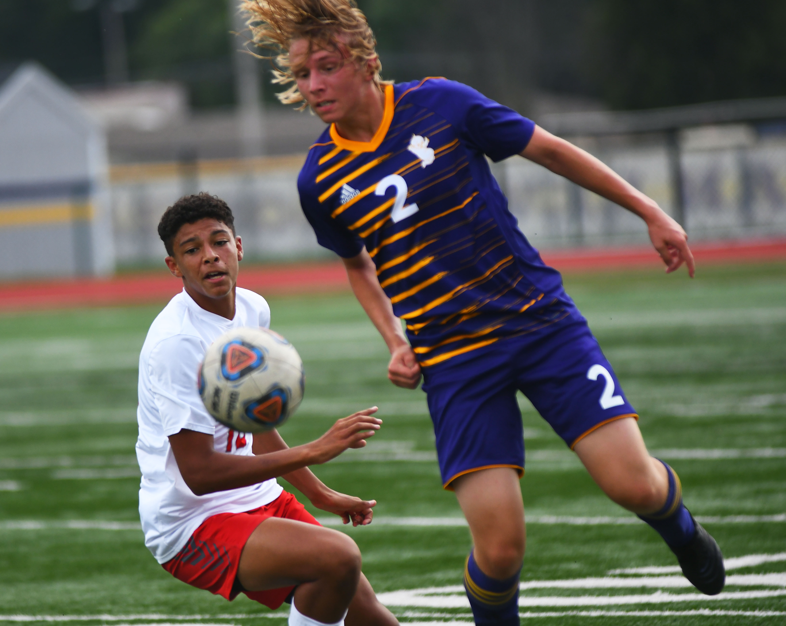
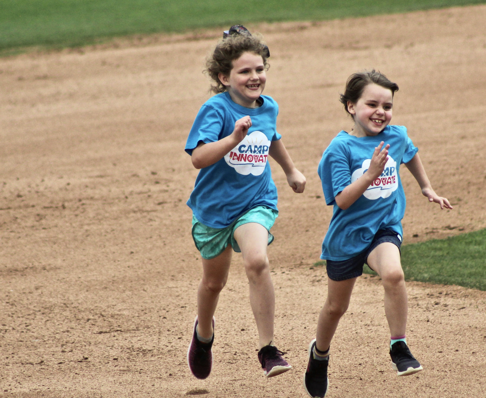
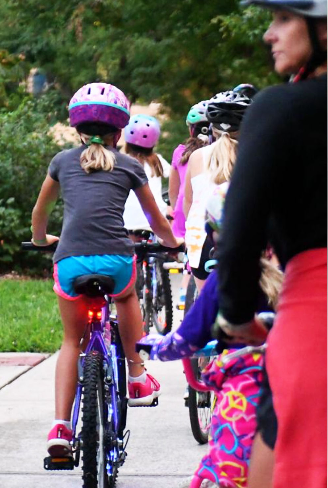
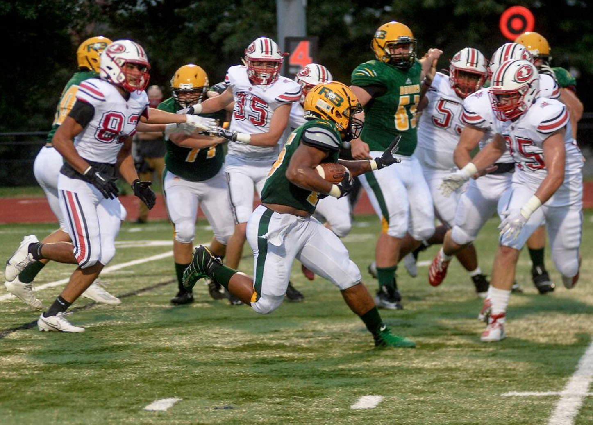
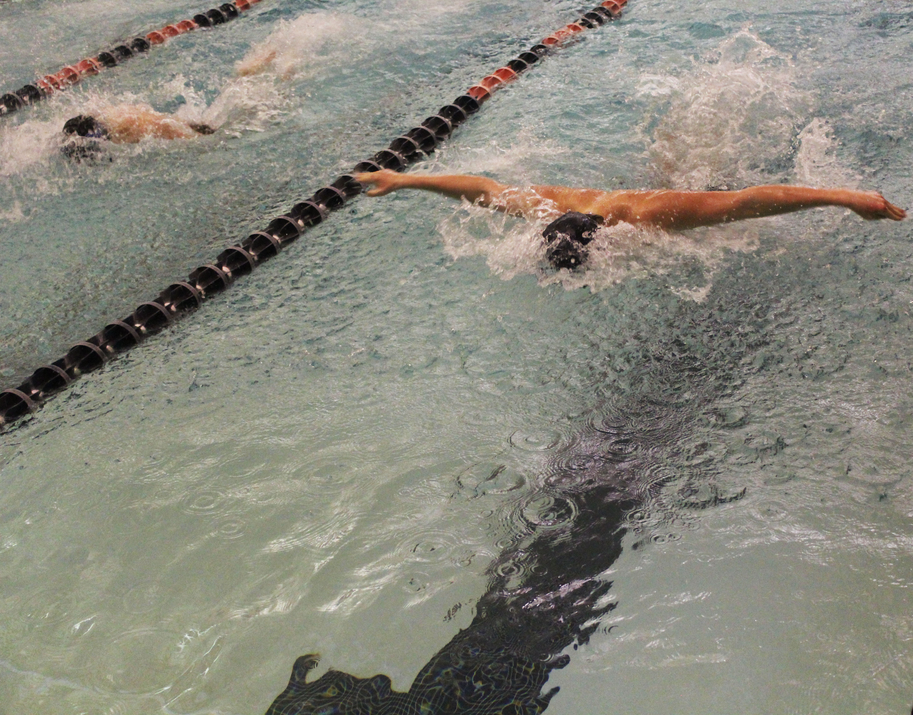
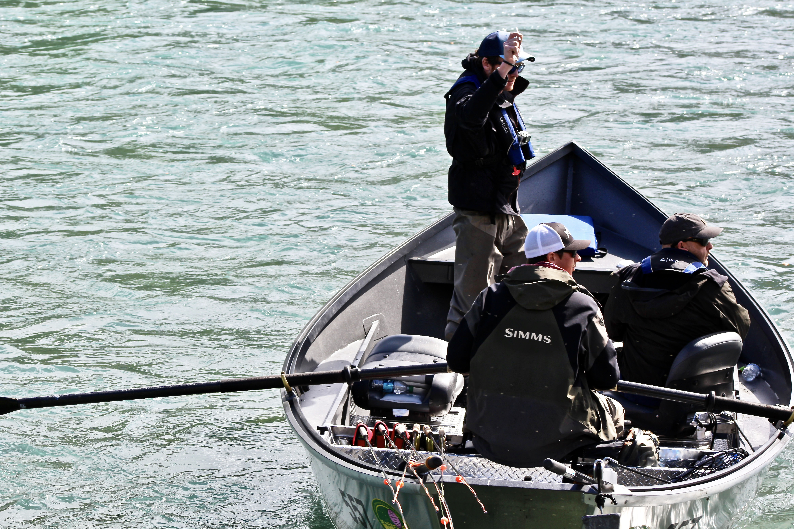
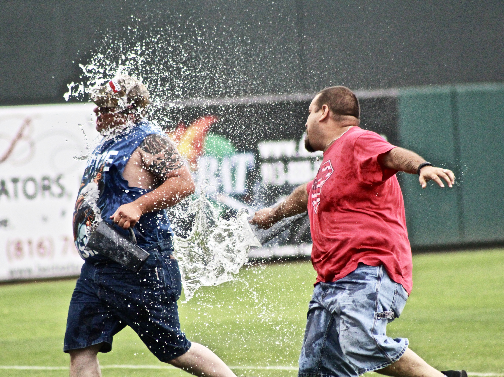
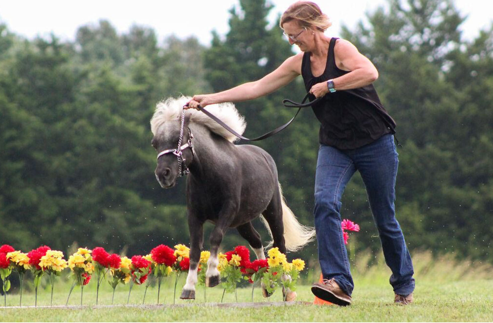

The importance of staying healthy during a global pandemic
The importance of staying healthy during a global pandemic
About the project
In March, a wide spread of people in the United States started quarantine. Gyms were closed, and schools were cancelled. People were advised to work from home, and they were faced with added stress.
With taking care of children, working, and trying to balance a house, exercise was not a main priority.
Exercise levels started to slow down. Children couldn't play on their sports teams, and playgrounds were blocked off. Trends around the US started to decline.
The purpose of this project is to inspire people with ways to get back on track if they lost their routine. They can learn from the current state of the country to get more inspiration. Hopefully they can find something they never thought of.
Another main goal is for people to have access to therapy and counseling contacts if they have been affected by the pandemic. It is strong to ask for help, and these people are not alone. There are options everywhere either in-person or on the phone.
This is an issue that people have been slowly having to adapt to, but there are ways we as a country can stick together to help.
Don't know where to start?
These are few different types of activities people can do outside or inside It might depend on space and equipment you have, but there are variations for everyone.
This is not an exhaustive list of things to do. Other things would be to make a weights station at home. Gallons of water, laundry detergent, and other heavy household items work.
In terms of exercise videos, MadFit is one of my favorites. She does dance fitness, cardio without jumping, and other apartment friendly exercises.
Tabatha Dorrian walks with her dogs Bogey and Gracie on Friday, April 10, 2020, in Olathe, Kan. Dorrian was taking an afternoon walk because she had work off for Good Friday.

Hickman senior Val Ashrafzadeh, right, prepares to intercept a pass on Saturday August, 29, 2020, at Hickman High School. The Kewpies played their first game of the season Saturday and defeated Nixa 2-1.Kansas City T-Bones catcher Roy Morales catches a pitch on Friday, May 31, 2019, in Kansas City, Kan. Morales was the starting catcher for this game.

Children run the bases during the school day on Wednesday, June 19, 2020, at the Kansas City T-Bones stadium in Kansas City, Kan. Every year, the T-Bones hosts a camping day for the children and their school to attend a weekday game.

Cyclists begin their glow-in-the-dark ride on Saturday, Sept. 12, 2020, at Flat Branch Park in Columbia. The event was coordinated by Jeff and Erika Coffman. .

Rock Bridge sophomore Jake Downey, center, runs with the ball to get through the Jefferson City defense Friday, Sept. 12, 2020, at Rock Bridge High School. The Bruins won the game 23-21.

Jake Gartenburg swims the fly leg of the 200 IM relay at a swim meet in 2017. Gartenburg went on to attend college at the University of Arkansas.

A team of fisherman head out to start another day of salmon fishing on Saturday, June 17, 2017, in Seward, Alaska. The fisherman departed to head out to Resurrection Bay which was about an thirty minutes away by car.

Two people run the bases for a promotions event at the Kansas City T-Bones game on Saturday, June 18, 2019, in Kansas City Kan. Every fourth inning, there was a pitcher run that were used for donations.

Susan Dudley and horse Hollywood jump over flowers on Saturday August 29, 2020, in New Bloomfield, Mo. The two previously won second place in the confirmation category.
"It doesn't matter how slow you go, you're already lapping those on the couch."
Contact me!
Hello! I am so glad you are here. My name is Blythe Dorrian, and I am a senior convergence journalism major at Mizzou. I currently work as a staff photographer for the Columbia Missourian. Sports are my favorite topic to cover.
When I am not working, I love exercising and being outdoors in my free time. I love going on walks with people. Cold weather hikes are always my favorite.